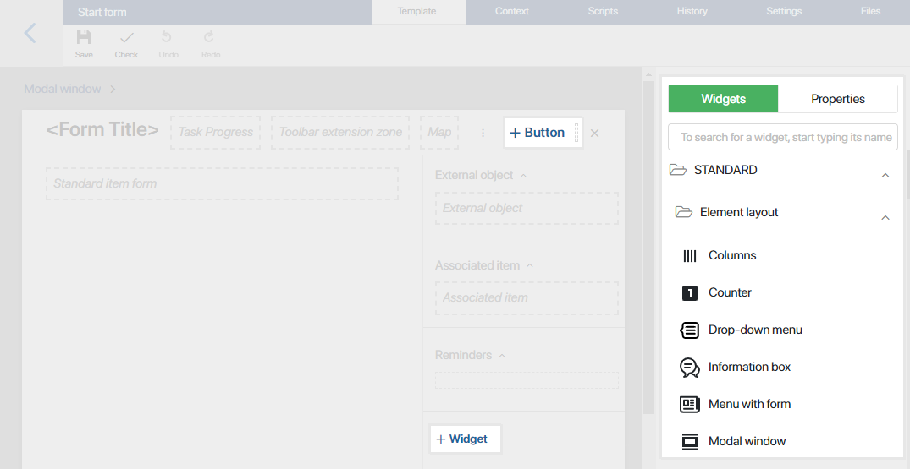

Если функций стандартной формы недостаточно, создайте собственный шаблон при помощи редактора форм. Он позволяет добавить новые кнопки, виджеты, менять расположение полей и т. д. Вы можете создавать шаблоны формы для задачи, стартового события, задачи согласования и ознакомления, а также карточки экземпляра процесса. Добавленные шаблоны можно переиспользовать.
Создание шаблона
Создать шаблон формы можно несколькими способами:
- на странице моделирования бизнес-процесса — откройте вкладку Формы и в правом верхнем углу нажмите на кнопку +Форма. В открывшемся окне введите название шаблона и нажмите Сохранить;

- в задаче бизнес-процесса, стартовом событии, блоке Согласование или Ознакомление — откройте окно настроек задачи и перейдите на вкладку Форма. В левом верхнем углу рядом с надписью Формы нажмите <По умолчанию> и затем кнопку + Создать форму.

Редактирование шаблона
Шаблоны создаются в дизайнере интерфейсов, который состоит из нескольких вкладок:
- Шаблон — на этой вкладке отображается поле для моделирования формы. Здесь вы сможете настроить внешний вид шаблона: изменить или создать новые кнопки, добавить виджеты.
Кроме того, вы можете настроить динамическую форму, чтобы её внешний вид изменялся в зависимости от действий пользователя. Подробнее об этом читайте в статье «Динамические формы»;
- Контекст — здесь добавляются свойства, которые можно выносить на поле шаблона, а также использовать при написании скриптов. Чтобы создать свойство, нажмите кнопку + Добавить и укажите его параметры;
- Скрипты — на этой вкладке вы можете написать скрипт, чтобы настроить поведение виджетов, например, показать всплывающее окно при наведении курсора на определенную область формы или страницы. Подробнее об этом читайте в статье «Скрипты в виджетах» и в справке ELMA365 TS SDK;
- История — на этой вкладке отображаются все опубликованные версии настроенного шаблона с указанием автора, времени и комментария, оставленного при публикации. Чтобы восстановить одну из предыдущих опубликованных версий шаблона, выберите её из списка, нажмите кнопку Применить версию и подтвердите действие. Чтобы восстановленная версия формы отображалась пользователям в новых экземплярах бизнес-процесса, опубликуйте его;
- Настройки — здесь можно:
- отключить отображение виджета с ошибками валидации на форме пользовательской задачи или стартового события в процессе;
- указать функции из скриптов, которые вы хотите применять при отображении виджета и валидации формы;
- разрешить использовать в скриптах глобальные константы и виджеты из разделов системы.
- Файлы — на этой вкладке вы можете добавить библиотеки и пользовательские функции на языке JavaScript, чтобы обращаться к ним в клиентских скриптах.
Подробное описание вкладок читайте в статье «Вкладки дизайнера».
Добавление виджетов на шаблон
Виджет — это элемент интерфейса с определёнными функциональными возможностями, позволяющими решить такие задачи, как загрузка файла, отображение инструкции, ленты, списка пользователей и т. д.
Добавить виджет на форму можно несколькими способами:
- на верхней панели поля для моделирования нажмите + Кнопка;
- на боковой панели поля для моделирования нажмите + Виджет;
- перетащите виджет на поле для моделирования с боковой панели дизайнера.

Затем в окне настроек виджета укажите параметры и сохраните изменения.
Обратите внимание, список доступных виджетов для верхней, боковой панелей и основной части формы различается. Так, на верхней панели можно разместить только виджеты Кнопка, Карта и Процент выполнения задачи.
Подробнее о добавлении виджетов читайте в статье «Шаблон формы». Описание всех доступных виджетов можно найти в разделе «Типы виджетов».
Инструменты для работы с шаблоном
На верхней панели дизайнера интерфейсов располагаются кнопки для работы с настраиваемым шаблоном:

- Сохранить — сохраните настроенный шаблон, чтобы его можно было использовать для изменения форм задач или стартового события бизнес-процесса;
- Проверить — нажмите, чтобы проверить добавленные виджеты на наличие ошибок. Если ошибка обнаружена, например, скрипт, определяющий работу виджета, составлен неверно, вы увидите оповещение;
- Отменить — отмените последнее действие;
- Повторить — восстановите отменённое действие.
Доступные действия с шаблоном
На странице моделирования процесса перейдите на вкладку Формы и выберите ранее созданный шаблон из списка. Вам станут доступны следующие действия:
- Копировать — создайте копию ранее созданного шаблона, чтобы отредактировать его и использовать на форме другой задачи. При копировании шаблона в открывшемся окне введите название и нажмите Сохранить;
- Удалить — выберите действие, если шаблон больше не используется в процессе. Название удалённого шаблона будет перечёркнуто в общем списке;
- Восстановить — выберите из списка удалённый шаблон и восстановите его.